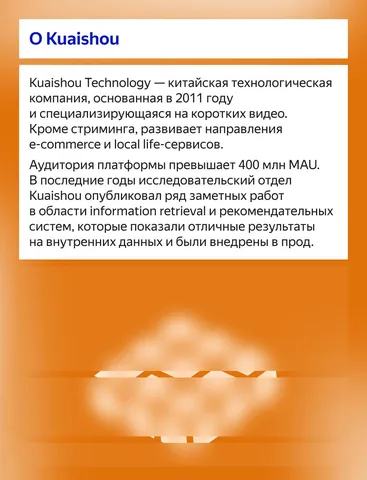
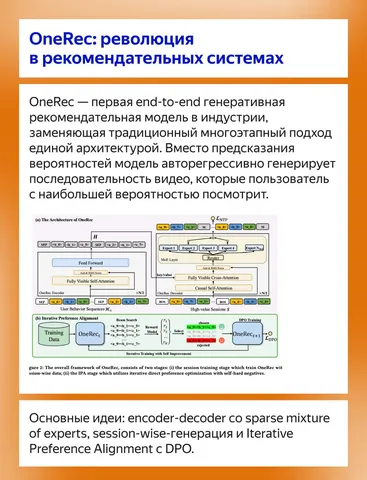
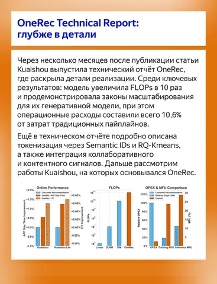
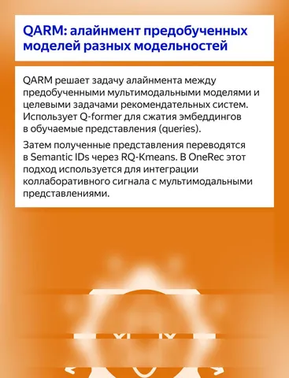
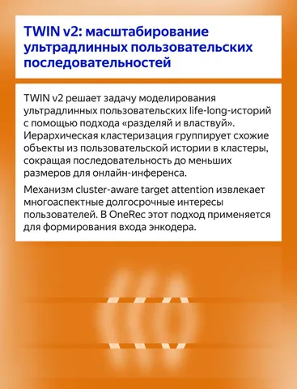
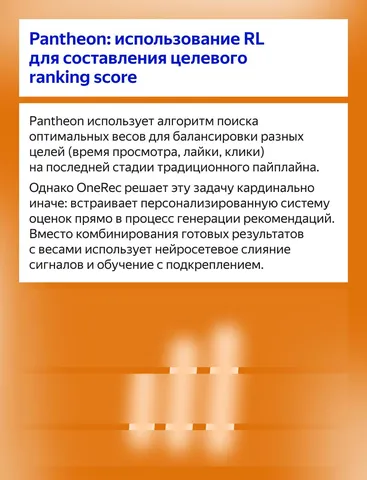
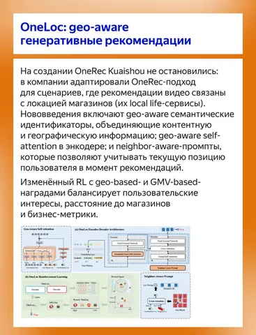
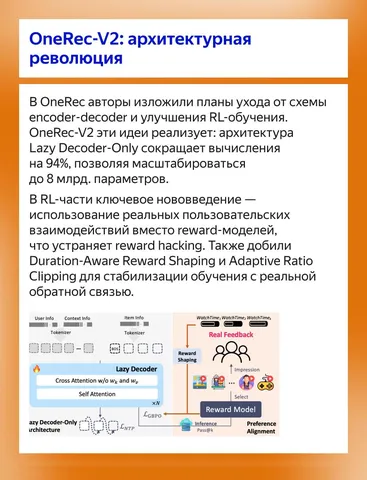
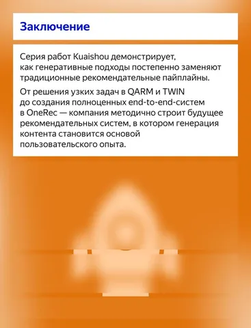

Собрали в карточках краткие описания семи больших работ Kuaishou, включая те, на основе которых вырос OneRec и его продолжения.
Материал поможет быстро сложить в голове картину того, как компания шаг за шагом пришла к созданию первых генеративных рекомендательных систем в индустрии.
Ссылки на работы, упомянутые в посте:
— OneRec: Unifying Retrieve and Rank with Generative Recommender and Iterative Preference Alignment
— OneRec Technical Report
— OneRec-V2 Technical Report
— QARM: Quantitative Alignment Multi-Modal Recommendation at Kuaishou
— TWIN V2: Scaling Ultra-Long User Behavior Sequence Modeling for Enhanced CTR Prediction at Kuaishou
— Pantheon: Personalized Multi-objective Ensemble Sort via Iterative Pareto Policy Optimization
— OneLoc: Geo-Aware Generative Recommender Systems for Local Life Service
@RecSysChannel
Обзор подготовил
